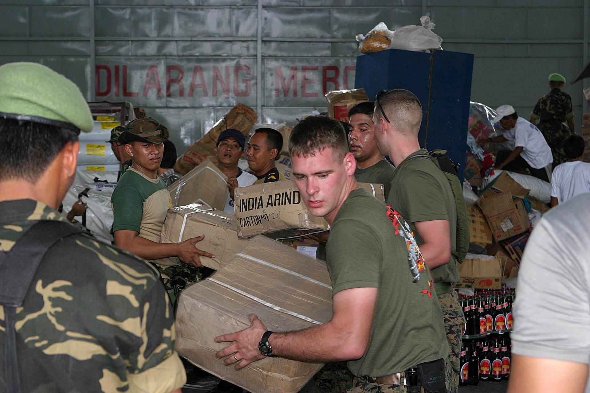
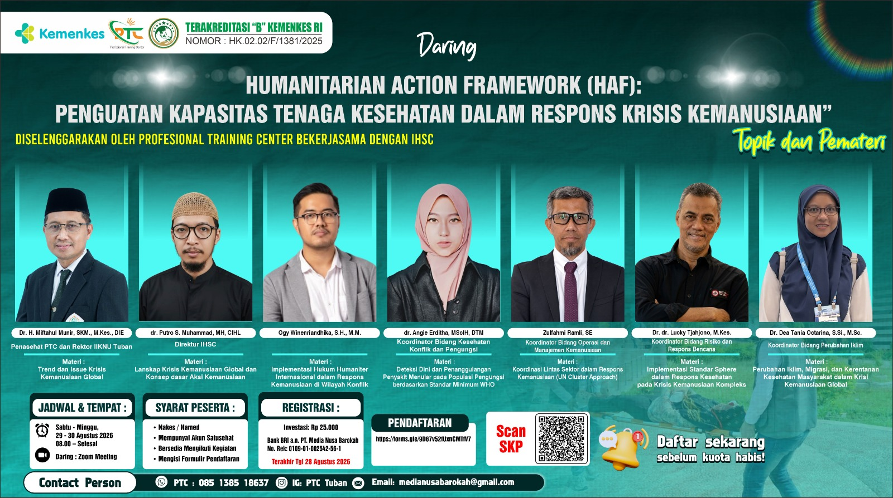

Flores Earthquake: The Second Phase of Disaster and Its Strategy
Gempa Flores: Fase Kedua Bencana dan Strateginya

The Indonesian Humanitarian Study Center (IHSC) at IIK NU Tuban extends its deepest condolences to the people of East Nusa Tenggara, especially the families of the victims of the M7.7 earthquake that struck north of Flores on the morning of 15 August 2026. According to the Meteorology, Climatology, and Geophysical Agency (BMKG), the quake was triggered by the Flores back-arc thrust fault. At least 38 people died across four districts, around 2,000 people are displaced, and a tsunami warning was briefly issued before being lifted.
Pusat Studi Humanitarian (IHSC) IIK NU Tuban menyampaikan belasungkawa yang sedalam-dalamnya kepada masyarakat Nusa Tenggara Timur, khususnya keluarga korban gempa M7,7 yang mengguncang utara Flores pada Jumat pagi, 15 Agustus 2026. Menurut Badan Meteorologi, Klimatologi, dan Geofisika (BMKG), gempa dipicu oleh sesar naik busur belakang Flores. Sedikitnya 38 orang meninggal dunia di empat kabupaten, sekitar 2.000 orang mengungsi, dan peringatan tsunami sempat dikeluarkan sebelum akhirnya dicabut.
IHSC, a study center established by the Rector's Decree of IIK NU Tuban in May 2026, follows every national disaster with one question: what happens after the emergency ends? Indonesia knows the first phase of disaster well: search and rescue, evacuation, and emergency relief. But a disaster has a second phase, the transition from emergency to recovery, and it is there that the fate of survivors is decided.
IHSC, pusat studi yang dibentuk melalui SK Rektor IIK NU Tuban pada Mei 2026, mengikuti setiap bencana nasional dengan satu pertanyaan: apa yang terjadi setelah keadaan darurat berakhir? Indonesia mengenal baik fase pertama bencana: pencarian dan penyelamatan, evakuasi, dan bantuan darurat. Tetapi bencana memiliki fase kedua, masa transisi dari darurat menuju pemulihan, dan di sanalah nasib para penyintas ditentukan.
The second phase demands its own strategy. It moves from tents to transitional shelter, from bottled water to safe sanitation that prevents outbreaks, from emergency clinics to continuous care for the wounded and the traumatized. It means reopening schools so children can return to routine, restoring livelihoods so families are not trapped in dependency, and keeping data accurate so aid reaches the right people. Above all, it requires coordination between government, health workers, universities, and volunteers.
Fase kedua menuntut strateginya sendiri. Berpindah dari tenda ke tempat tinggal transisi, dari air kemasan ke sanitasi aman yang mencegah wabah, dari klinik darurat ke perawatan berkelanjutan bagi korban luka dan trauma. Berarti membuka kembali sekolah agar anak-anak kembali pada rutinitas, memulihkan mata pencaharian agar keluarga tidak terjebak ketergantungan, dan menjaga akurasi data agar bantuan sampai kepada orang yang tepat. Di atas segalanya, fase ini menuntut koordinasi antara pemerintah, tenaga kesehatan, kampus, dan relawan.
Four days after this earthquake, the world marks World Humanitarian Day on 19 August. The commemoration is a reminder that humanitarian action is a discipline, not a mood: it must be studied, trained, and coordinated before it is needed. IHSC's sympathy goes to Flores; its commitment is to ensure that the second phase of every future disaster is handled with knowledge, not only with heart.
Empat hari setelah gempa ini, dunia memperingati Hari Kemanusiaan Sedunia pada 19 Agustus. Peringatan ini menjadi pengingat bahwa aksi kemanusiaan adalah disiplin, bukan suasana hati: harus dipelajari, dilatih, dan dikoordinasikan sebelum dibutuhkan. Duka IHSC untuk Flores; komitmennya memastikan fase kedua setiap bencana di masa depan ditangani dengan ilmu, bukan hanya dengan hati.
Sources
Sumber
- USGS Earthquake Hazards Program. M 7.7 - 68 km NNW of Ende, Indonesia: earthquake.usgs.gov/earthquakes/eventpage/us6000tkt2
- Program Gempa Bumi USGS. M 7.7 - 68 km NNW dari Ende, Indonesia: earthquake.usgs.gov/earthquakes/eventpage/us6000tkt2
- ANTARA News. BMKG: Gempa magnitudo 7,7 di NTT akibat sesar naik busur belakang Flores: antaranews.com/berita/5695649
- ANTARA News. BMKG: Gempa magnitudo 7,7 di NTT akibat sesar naik busur belakang Flores: antaranews.com/berita/5695649
- Kompas.com. Governor: death toll from the Flores earthquake now reaches 38: regional.kompas.com/read/2026/08/15/174951178
- Kompas.com. Gubernur sebut korban tewas akibat gempa Flores hingga kini ada 38 orang: regional.kompas.com/read/2026/08/15/174951178
- Kompas.com. BNPB: 2,000 residents displaced; 5 airports and 2 ports affected by the earthquake: regional.kompas.com/read/2026/08/15/170000178
- Kompas.com. BNPB catat 2.000 warga mengungsi; 5 bandara dan 2 pelabuhan terdampak gempa: regional.kompas.com/read/2026/08/15/170000178
- Kompas.com. BMKG lifts the tsunami warning after the M7.7 earthquake in NTT: regional.kompas.com/read/2026/08/15/080055878
- Kompas.com. BMKG cabut peringatan tsunami usai gempa M7,7 NTT: regional.kompas.com/read/2026/08/15/080055878
- Hero image: USGS ShakeMap (public domain), via Wikimedia Commons.
- Foto utama: ShakeMap USGS (domain publik), via Wikimedia Commons.
Related news
Berita terkait
 HumanitarianKemanusiaan
HumanitarianKemanusiaan
After the NTT Quake, What Follows Decides
Setelah Gempa NTT, yang Menentukan Justru Fase Sesudahnya
5 October 20265 Oktober 2026
HumanitarianKemanusiaanWorld Humanitarian Day: Why Humanitarian Action Needs Science and Data
Hari Kemanusiaan Sedunia: Mengapa Aksi Kemanusiaan Membutuhkan Sains dan Data
14 August 202614 Agustus 2026
NewsKabar